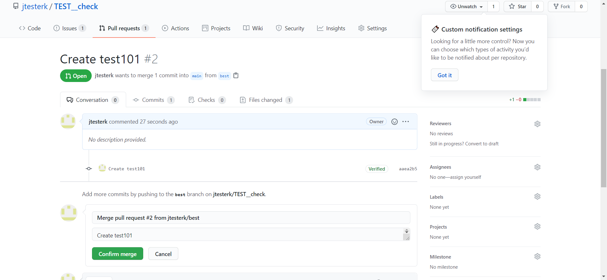
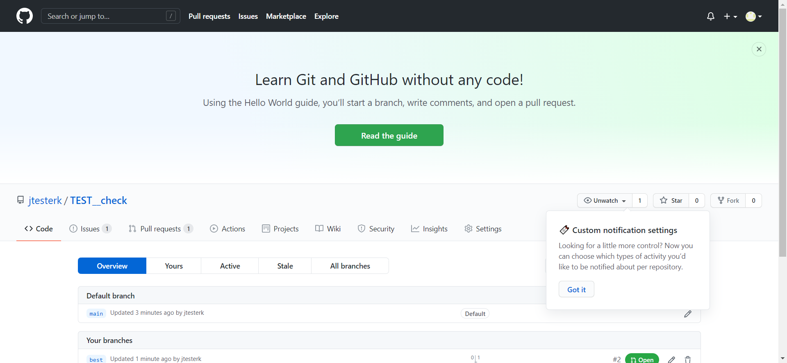

<!DOCTYPE html>
<html>
  <head>
    <meta charset="utf-8"/>
    <title>Test Report</title>
    <style>body {
	font-family: Helvetica, Arial, sans-serif;
	font-size: 12px;
	/* do not increase min-width as some may use split screens */
	min-width: 800px;
	color: #999;
}

h1 {
	font-size: 24px;
	color: black;
}

h2 {
	font-size: 16px;
	color: black;
}

p {
    color: black;
}

a {
	color: #999;
}

table {
	border-collapse: collapse;
}

/******************************
 * SUMMARY INFORMATION
 ******************************/

#environment td {
	padding: 5px;
	border: 1px solid #E6E6E6;
}

#environment tr:nth-child(odd) {
	background-color: #f6f6f6;
}

/******************************
 * TEST RESULT COLORS
 ******************************/
span.passed, .passed .col-result {
	color: green;
}
span.skipped, span.xfailed, span.rerun, .skipped .col-result, .xfailed .col-result, .rerun .col-result {
	color: orange;
}
span.error, span.failed, span.xpassed, .error .col-result, .failed .col-result, .xpassed .col-result  {
	color: red;
}


/******************************
 * RESULTS TABLE
 *
 * 1. Table Layout
 * 2. Extra
 * 3. Sorting items
 *
 ******************************/

/*------------------
 * 1. Table Layout
 *------------------*/

#results-table {
	border: 1px solid #e6e6e6;
	color: #999;
	font-size: 12px;
	width: 100%
}

#results-table th, #results-table td {
	padding: 5px;
	border: 1px solid #E6E6E6;
	text-align: left
}
#results-table th {
	font-weight: bold
}

/*------------------
 * 2. Extra
 *------------------*/

.log:only-child {
	height: inherit
}
.log {
	background-color: #e6e6e6;
	border: 1px solid #e6e6e6;
	color: black;
	display: block;
	font-family: "Courier New", Courier, monospace;
	height: 230px;
	overflow-y: scroll;
	padding: 5px;
	white-space: pre-wrap
}
div.image {
	border: 1px solid #e6e6e6;
	float: right;
	height: 240px;
	margin-left: 5px;
	overflow: hidden;
	width: 320px
}
div.image img {
	width: 320px
}
div.video {
	border: 1px solid #e6e6e6;
	float: right;
	height: 240px;
	margin-left: 5px;
	overflow: hidden;
	width: 320px
}
div.video video {
	overflow: hidden;
	width: 320px;
    height: 240px;
}
.collapsed {
	display: none;
}
.expander::after {
	content: " (show details)";
	color: #BBB;
	font-style: italic;
	cursor: pointer;
}
.collapser::after {
	content: " (hide details)";
	color: #BBB;
	font-style: italic;
	cursor: pointer;
}

/*------------------
 * 3. Sorting items
 *------------------*/
.sortable {
	cursor: pointer;
}

.sort-icon {
	font-size: 0px;
	float: left;
	margin-right: 5px;
	margin-top: 5px;
	/*triangle*/
	width: 0;
	height: 0;
	border-left: 8px solid transparent;
	border-right: 8px solid transparent;
}

.inactive .sort-icon {
	/*finish triangle*/
	border-top: 8px solid #E6E6E6;
}

.asc.active .sort-icon {
	/*finish triangle*/
	border-bottom: 8px solid #999;
}

.desc.active .sort-icon {
	/*finish triangle*/
	border-top: 8px solid #999;
}
</style></head>
  <body onLoad="init()">
    <script>/* This Source Code Form is subject to the terms of the Mozilla Public
 * License, v. 2.0. If a copy of the MPL was not distributed with this file,
 * You can obtain one at http://mozilla.org/MPL/2.0/. */


function toArray(iter) {
    if (iter === null) {
        return null;
    }
    return Array.prototype.slice.call(iter);
}

function find(selector, elem) {
    if (!elem) {
        elem = document;
    }
    return elem.querySelector(selector);
}

function find_all(selector, elem) {
    if (!elem) {
        elem = document;
    }
    return toArray(elem.querySelectorAll(selector));
}

function sort_column(elem) {
    toggle_sort_states(elem);
    var colIndex = toArray(elem.parentNode.childNodes).indexOf(elem);
    var key;
    if (elem.classList.contains('numeric')) {
        key = key_num;
    } else if (elem.classList.contains('result')) {
        key = key_result;
    } else {
        key = key_alpha;
    }
    sort_table(elem, key(colIndex));
}

function show_all_extras() {
    find_all('.col-result').forEach(show_extras);
}

function hide_all_extras() {
    find_all('.col-result').forEach(hide_extras);
}

function show_extras(colresult_elem) {
    var extras = colresult_elem.parentNode.nextElementSibling;
    var expandcollapse = colresult_elem.firstElementChild;
    extras.classList.remove("collapsed");
    expandcollapse.classList.remove("expander");
    expandcollapse.classList.add("collapser");
}

function hide_extras(colresult_elem) {
    var extras = colresult_elem.parentNode.nextElementSibling;
    var expandcollapse = colresult_elem.firstElementChild;
    extras.classList.add("collapsed");
    expandcollapse.classList.remove("collapser");
    expandcollapse.classList.add("expander");
}

function show_filters() {
    var filter_items = document.getElementsByClassName('filter');
    for (var i = 0; i < filter_items.length; i++)
        filter_items[i].hidden = false;
}

function add_collapse() {
    // Add links for show/hide all
    var resulttable = find('table#results-table');
    var showhideall = document.createElement("p");
    showhideall.innerHTML = '<a href="javascript:show_all_extras()">Show all details</a> / ' +
                            '<a href="javascript:hide_all_extras()">Hide all details</a>';
    resulttable.parentElement.insertBefore(showhideall, resulttable);

    // Add show/hide link to each result
    find_all('.col-result').forEach(function(elem) {
        var collapsed = get_query_parameter('collapsed') || 'Passed';
        var extras = elem.parentNode.nextElementSibling;
        var expandcollapse = document.createElement("span");
        if (extras.classList.contains("collapsed")) {
            expandcollapse.classList.add("expander")
        } else if (collapsed.includes(elem.innerHTML)) {
            extras.classList.add("collapsed");
            expandcollapse.classList.add("expander");
        } else {
            expandcollapse.classList.add("collapser");
        }
        elem.appendChild(expandcollapse);

        elem.addEventListener("click", function(event) {
            if (event.currentTarget.parentNode.nextElementSibling.classList.contains("collapsed")) {
                show_extras(event.currentTarget);
            } else {
                hide_extras(event.currentTarget);
            }
        });
    })
}

function get_query_parameter(name) {
    var match = RegExp('[?&]' + name + '=([^&]*)').exec(window.location.search);
    return match && decodeURIComponent(match[1].replace(/\+/g, ' '));
}

function init () {
    reset_sort_headers();

    add_collapse();

    show_filters();

    sort_column(find('.initial-sort'));

    find_all('.sortable').forEach(function(elem) {
        elem.addEventListener("click",
                              function(event) {
                                  sort_column(elem);
                              }, false)
    });

};

function sort_table(clicked, key_func) {
    var rows = find_all('.results-table-row');
    var reversed = !clicked.classList.contains('asc');
    var sorted_rows = sort(rows, key_func, reversed);
    /* Whole table is removed here because browsers acts much slower
     * when appending existing elements.
     */
    var thead = document.getElementById("results-table-head");
    document.getElementById('results-table').remove();
    var parent = document.createElement("table");
    parent.id = "results-table";
    parent.appendChild(thead);
    sorted_rows.forEach(function(elem) {
        parent.appendChild(elem);
    });
    document.getElementsByTagName("BODY")[0].appendChild(parent);
}

function sort(items, key_func, reversed) {
    var sort_array = items.map(function(item, i) {
        return [key_func(item), i];
    });

    sort_array.sort(function(a, b) {
        var key_a = a[0];
        var key_b = b[0];

        if (key_a == key_b) return 0;

        if (reversed) {
            return (key_a < key_b ? 1 : -1);
        } else {
            return (key_a > key_b ? 1 : -1);
        }
    });

    return sort_array.map(function(item) {
        var index = item[1];
        return items[index];
    });
}

function key_alpha(col_index) {
    return function(elem) {
        return elem.childNodes[1].childNodes[col_index].firstChild.data.toLowerCase();
    };
}

function key_num(col_index) {
    return function(elem) {
        return parseFloat(elem.childNodes[1].childNodes[col_index].firstChild.data);
    };
}

function key_result(col_index) {
    return function(elem) {
        var strings = ['Error', 'Failed', 'Rerun', 'XFailed', 'XPassed',
                       'Skipped', 'Passed'];
        return strings.indexOf(elem.childNodes[1].childNodes[col_index].firstChild.data);
    };
}

function reset_sort_headers() {
    find_all('.sort-icon').forEach(function(elem) {
        elem.parentNode.removeChild(elem);
    });
    find_all('.sortable').forEach(function(elem) {
        var icon = document.createElement("div");
        icon.className = "sort-icon";
        icon.textContent = "vvv";
        elem.insertBefore(icon, elem.firstChild);
        elem.classList.remove("desc", "active");
        elem.classList.add("asc", "inactive");
    });
}

function toggle_sort_states(elem) {
    //if active, toggle between asc and desc
    if (elem.classList.contains('active')) {
        elem.classList.toggle('asc');
        elem.classList.toggle('desc');
    }

    //if inactive, reset all other functions and add ascending active
    if (elem.classList.contains('inactive')) {
        reset_sort_headers();
        elem.classList.remove('inactive');
        elem.classList.add('active');
    }
}

function is_all_rows_hidden(value) {
  return value.hidden == false;
}

function filter_table(elem) {
    var outcome_att = "data-test-result";
    var outcome = elem.getAttribute(outcome_att);
    class_outcome = outcome + " results-table-row";
    var outcome_rows = document.getElementsByClassName(class_outcome);

    for(var i = 0; i < outcome_rows.length; i++){
        outcome_rows[i].hidden = !elem.checked;
    }

    var rows = find_all('.results-table-row').filter(is_all_rows_hidden);
    var all_rows_hidden = rows.length == 0 ? true : false;
    var not_found_message = document.getElementById("not-found-message");
    not_found_message.hidden = !all_rows_hidden;
}
</script>
    <h1>Tests report</h1>
    <p>Report generated on 23-Jan-2021 at 19:46:39 by <a href="https://pypi.python.org/pypi/pytest-html">pytest-html</a> v2.1.1</p>
    <h2>Environment</h2>
    <table id="environment">
      <tr>
        <td>Packages</td>
        <td>{"pluggy": "0.13.1", "py": "1.9.0", "pytest": "6.1.2"}</td></tr>
      <tr>
        <td>Platform</td>
        <td>Windows-10-10.0.19041-SP0</td></tr>
      <tr>
        <td>Plugins</td>
        <td>{"html": "2.1.1", "metadata": "1.10.0"}</td></tr>
      <tr>
        <td>Python</td>
        <td>3.8.2</td></tr></table>
    <h2>Summary</h2>
    <p>9 tests ran in 265.32 seconds. </p>
    <p class="filter" hidden="true">(Un)check the boxes to filter the results.</p><input checked="true" class="filter" data-test-result="passed" hidden="true" name="filter_checkbox" onChange="filter_table(this)" type="checkbox"/><span class="passed">7 passed</span>, <input checked="true" class="filter" data-test-result="skipped" disabled="true" hidden="true" name="filter_checkbox" onChange="filter_table(this)" type="checkbox"/><span class="skipped">0 skipped</span>, <input checked="true" class="filter" data-test-result="failed" hidden="true" name="filter_checkbox" onChange="filter_table(this)" type="checkbox"/><span class="failed">2 failed</span>, <input checked="true" class="filter" data-test-result="error" disabled="true" hidden="true" name="filter_checkbox" onChange="filter_table(this)" type="checkbox"/><span class="error">0 errors</span>, <input checked="true" class="filter" data-test-result="xfailed" disabled="true" hidden="true" name="filter_checkbox" onChange="filter_table(this)" type="checkbox"/><span class="xfailed">0 expected failures</span>, <input checked="true" class="filter" data-test-result="xpassed" disabled="true" hidden="true" name="filter_checkbox" onChange="filter_table(this)" type="checkbox"/><span class="xpassed">0 unexpected passes</span>
    <h2>Results</h2>
    <table id="results-table">
      <thead id="results-table-head">
        <tr>
          <th class="sortable result initial-sort" col="result">Result</th>
          <th>Title</th>
          <th class="sortable" col="name">Test</th>
          <th class="sortable numeric" col="duration">Duration</th></tr>
        <tr hidden="true" id="not-found-message">
          <th colspan="4">No results found. Try to check the filters</th></tr></thead>
      <tbody class="failed results-table-row">
        <tr>
          <td class="col-result">Failed</td>
          <td>    Merge</td>
          <td class="col-name">tests/github_tests.py::test_merge[github_user_with_repo0]</td>
          <td class="col-duration">22.83</td></tr>
        <tr>
          <td class="extra" colspan="4">
            <div><h4 style="margin: 8px;">Test description</h4></div>
            <div><div class="image"><a href="screenshots/test_merge__731a0020ea9741d.png" target="_blank"></a></div></div>
            <div class="log">actions = &lt;framework.action_framework.Actions object at 0x046A6958&gt;<br/>driver = &lt;selenium.webdriver.chrome.webdriver.WebDriver (session=&quot;e4b33c5fe249cac9c8542aa143d064b2&quot;)&gt;<br/>github_user_with_repo = &lt;data_classes.github.GitHubUserWithRepo object at 0x03F47EE0&gt;<br/><br/>    @pytest.mark.github<br/>    @pytest.mark.test<br/>    @pytest.mark.parametrize(<br/>        &quot;github_user_with_repo&quot;, [GitHubUserWithRepo(tester, GitHubRepo(&#x27;TEST__check&#x27;))])<br/>    def test_merge(actions: Actions, driver: WebDriver,<br/>                   github_user_with_repo: GitHubUserWithRepo):<br/>        &quot;&quot;&quot;<br/>        Merge<br/>        &quot;&quot;&quot;<br/>        github_login_page = GitHubLogin(actions)<br/>        github_login_page.open()<br/>        github_login_page.goto_login_form()<br/>        github_login_page.login(<br/>            username=github_user_with_repo.user.username,<br/>            password=github_user_with_repo.user.password<br/>        )<br/>        github_merge_page = GitHubMerge(actions, github_user_with_repo)<br/>        github_merge_page.open()<br/>        github_merge_page.pick_pull_requests()<br/>&gt;       github_merge_page.create()<br/><br/>tests\github_tests.py:248: <br/>_ _ _ _ _ _ _ _ _ _ _ _ _ _ _ _ _ _ _ _ _ _ _ _ _ _ _ _ _ _ _ _ _ _ _ _ _ _ _ _ <br/>pages\git_hub\merge.py:35: in create<br/>    self.actions.click(self.confirm_merge)<br/>framework\action_framework.py:22: in click<br/>    self.element_provider.find_element(selector, timeout).click()<br/>framework\element_provider.py:42: in find_element<br/>    return WebDriverWait(self.driver, tout)\<br/>_ _ _ _ _ _ _ _ _ _ _ _ _ _ _ _ _ _ _ _ _ _ _ _ _ _ _ _ _ _ _ _ _ _ _ _ _ _ _ _ <br/><br/>self = &lt;selenium.webdriver.support.wait.WebDriverWait (session=&quot;e4b33c5fe249cac9c8542aa143d064b2&quot;)&gt;<br/>method = &lt;selenium.webdriver.support.expected_conditions.presence_of_element_located object at 0x046A6CB8&gt;, message = &#x27;&#x27;<br/><br/>    def until(self, method, message=&#x27;&#x27;):<br/>        &quot;&quot;&quot;Calls the method provided with the driver as an argument until the \<br/>        return value is not False.&quot;&quot;&quot;<br/>        screen = None<br/>        stacktrace = None<br/>    <br/>        end_time = time.time() + self._timeout<br/>        while True:<br/>            try:<br/>                value = method(self._driver)<br/>                if value:<br/>                    return value<br/>            except self._ignored_exceptions as exc:<br/>                screen = getattr(exc, &#x27;screen&#x27;, None)<br/>                stacktrace = getattr(exc, &#x27;stacktrace&#x27;, None)<br/>            time.sleep(self._poll)<br/>            if time.time() &gt; end_time:<br/>                break<br/>&gt;       raise TimeoutException(message, screen, stacktrace)<br/><span class="error">E       selenium.common.exceptions.TimeoutException: Message:</span><br/><br/>c:\users\kolak\.virtualenvs\critical-usg-selenium-tests-hhi5ombe\lib\site-packages\selenium\webdriver\support\wait.py:80: TimeoutException<br/> ------------------------------Captured stderr call------------------------------ <br/>INFO:root:open: &quot;None&quot;
INFO:root:click: (&#x27;xpath&#x27;, &quot;//a[@href=&#x27;/login&#x27;]&quot;)
INFO:root:find element: (&#x27;xpath&#x27;, &quot;//a[@href=&#x27;/login&#x27;]&quot;), timeout: 5 sec.
INFO:root:type text: (&#x27;name&#x27;, &#x27;login&#x27;)
INFO:root:find element: (&#x27;name&#x27;, &#x27;login&#x27;), timeout: 5 sec.
INFO:root:type text: (&#x27;name&#x27;, &#x27;password&#x27;)
INFO:root:find element: (&#x27;name&#x27;, &#x27;password&#x27;), timeout: 5 sec.
INFO:root:submit: (&#x27;xpath&#x27;, &#x27;//form&#x27;)
INFO:root:find element: (&#x27;xpath&#x27;, &#x27;//form&#x27;), timeout: 5 sec.
INFO:root:wait for: XpathExists(&quot;//div[@id=&#x27;dashboard&#x27;]&quot;)
INFO:root:open: &quot;https://github.com/jtesterk/TEST__check/branches/all&quot;
INFO:root:click: (&#x27;xpath&#x27;, &#x27;//a[contains(.,&quot;Open&quot;)]&#x27;)
INFO:root:find element: (&#x27;xpath&#x27;, &#x27;//a[contains(.,&quot;Open&quot;)]&#x27;), timeout: 5 sec.
INFO:root:click: (&#x27;xpath&#x27;, &#x27;//div[contains(@class,&quot;select-menu&quot;)]//button[contains(.,&quot;Merge pull request&quot;)]&#x27;)
INFO:root:find element: (&#x27;xpath&#x27;, &#x27;//div[contains(@class,&quot;select-menu&quot;)]//button[contains(.,&quot;Merge pull request&quot;)]&#x27;), timeout: 5 sec.
INFO:root:click: (&#x27;xpath&#x27;, &#x27;//div[contains(@class,&quot;select-menu&quot;)]//button[@name=&quot;do&quot; and contains(.,&quot;Confirm&quot;)]&#x27;)
INFO:root:find element: (&#x27;xpath&#x27;, &#x27;//div[contains(@class,&quot;select-menu&quot;)]//button[@name=&quot;do&quot; and contains(.,&quot;Confirm&quot;)]&#x27;), timeout: 5 sec.
<br/> -------------------------------Captured log call-------------------------------- <br/>INFO     root:action_framework.py:83 open: &quot;None&quot;
INFO     root:action_framework.py:21 click: (&#x27;xpath&#x27;, &quot;//a[@href=&#x27;/login&#x27;]&quot;)
INFO     root:element_provider.py:41 find element: (&#x27;xpath&#x27;, &quot;//a[@href=&#x27;/login&#x27;]&quot;), timeout: 5 sec.
INFO     root:action_framework.py:26 type text: (&#x27;name&#x27;, &#x27;login&#x27;)
INFO     root:element_provider.py:41 find element: (&#x27;name&#x27;, &#x27;login&#x27;), timeout: 5 sec.
INFO     root:action_framework.py:26 type text: (&#x27;name&#x27;, &#x27;password&#x27;)
INFO     root:element_provider.py:41 find element: (&#x27;name&#x27;, &#x27;password&#x27;), timeout: 5 sec.
INFO     root:action_framework.py:32 submit: (&#x27;xpath&#x27;, &#x27;//form&#x27;)
INFO     root:element_provider.py:41 find element: (&#x27;xpath&#x27;, &#x27;//form&#x27;), timeout: 5 sec.
INFO     root:action_framework.py:37 wait for: XpathExists(&quot;//div[@id=&#x27;dashboard&#x27;]&quot;)
INFO     root:action_framework.py:83 open: &quot;https://github.com/jtesterk/TEST__check/branches/all&quot;
INFO     root:action_framework.py:21 click: (&#x27;xpath&#x27;, &#x27;//a[contains(.,&quot;Open&quot;)]&#x27;)
INFO     root:element_provider.py:41 find element: (&#x27;xpath&#x27;, &#x27;//a[contains(.,&quot;Open&quot;)]&#x27;), timeout: 5 sec.
INFO     root:action_framework.py:21 click: (&#x27;xpath&#x27;, &#x27;//div[contains(@class,&quot;select-menu&quot;)]//button[contains(.,&quot;Merge pull request&quot;)]&#x27;)
INFO     root:element_provider.py:41 find element: (&#x27;xpath&#x27;, &#x27;//div[contains(@class,&quot;select-menu&quot;)]//button[contains(.,&quot;Merge pull request&quot;)]&#x27;), timeout: 5 sec.
INFO     root:action_framework.py:21 click: (&#x27;xpath&#x27;, &#x27;//div[contains(@class,&quot;select-menu&quot;)]//button[@name=&quot;do&quot; and contains(.,&quot;Confirm&quot;)]&#x27;)
INFO     root:element_provider.py:41 find element: (&#x27;xpath&#x27;, &#x27;//div[contains(@class,&quot;select-menu&quot;)]//button[@name=&quot;do&quot; and contains(.,&quot;Confirm&quot;)]&#x27;), timeout: 5 sec.<br/></div></td></tr></tbody>
      <tbody class="failed results-table-row">
        <tr>
          <td class="col-result">Failed</td>
          <td>    Usunięcie brancha</td>
          <td class="col-name">tests/github_tests.py::test_delete_branch[github_user_with_repo0-best]</td>
          <td class="col-duration">18.56</td></tr>
        <tr>
          <td class="extra" colspan="4">
            <div><h4 style="margin: 8px;">Test description</h4></div>
            <div><div class="image"><a href="screenshots/test_delete_branch__9b1623e60bd84f3.png" target="_blank"></a></div></div>
            <div class="log">actions = &lt;framework.action_framework.Actions object at 0x0475AB68&gt;<br/>driver = &lt;selenium.webdriver.chrome.webdriver.WebDriver (session=&quot;3ed5c1e01fbbc473c7a4e65f10931805&quot;)&gt;<br/>github_user_with_repo = &lt;data_classes.github.GitHubUserWithRepo object at 0x03F4B478&gt;, branchname = &#x27;best&#x27;<br/><br/>    @pytest.mark.github<br/>    @pytest.mark.test<br/>    @pytest.mark.parametrize(<br/>        &quot;github_user_with_repo, branchname&quot;,<br/>        [<br/>            [GitHubUserWithRepo(tester, GitHubRepo(&#x27;TEST__check&#x27;)), &quot;best&quot;]<br/>        ]<br/>    )<br/>    def test_delete_branch(actions: Actions, driver: WebDriver,<br/>                           github_user_with_repo: GitHubUserWithRepo, branchname: str):<br/>        &quot;&quot;&quot;<br/>        Usunięcie brancha<br/>    <br/>        &quot;&quot;&quot;<br/>        github_login_page = GitHubLogin(actions)<br/>        github_login_page.open()<br/>        github_login_page.goto_login_form()<br/>        github_login_page.login(<br/>            username=github_user_with_repo.user.username,<br/>            password=github_user_with_repo.user.password<br/>        )<br/>        github_branches_page = GitHubBranches(actions, github_user_with_repo)<br/>        github_branches_page.open()<br/>&gt;       github_branches_page.delete_branch(branchname=branchname)<br/><br/>tests\github_tests.py:275: <br/>_ _ _ _ _ _ _ _ _ _ _ _ _ _ _ _ _ _ _ _ _ _ _ _ _ _ _ _ _ _ _ _ _ _ _ _ _ _ _ _ <br/>pages\git_hub\branches.py:27: in delete_branch<br/>    self.actions.click(self.delete_branch_button.parameterized(<br/>framework\action_framework.py:22: in click<br/>    self.element_provider.find_element(selector, timeout).click()<br/>framework\element_provider.py:42: in find_element<br/>    return WebDriverWait(self.driver, tout)\<br/>_ _ _ _ _ _ _ _ _ _ _ _ _ _ _ _ _ _ _ _ _ _ _ _ _ _ _ _ _ _ _ _ _ _ _ _ _ _ _ _ <br/><br/>self = &lt;selenium.webdriver.support.wait.WebDriverWait (session=&quot;3ed5c1e01fbbc473c7a4e65f10931805&quot;)&gt;<br/>method = &lt;selenium.webdriver.support.expected_conditions.presence_of_element_located object at 0x0475AE98&gt;, message = &#x27;&#x27;<br/><br/>    def until(self, method, message=&#x27;&#x27;):<br/>        &quot;&quot;&quot;Calls the method provided with the driver as an argument until the \<br/>        return value is not False.&quot;&quot;&quot;<br/>        screen = None<br/>        stacktrace = None<br/>    <br/>        end_time = time.time() + self._timeout<br/>        while True:<br/>            try:<br/>                value = method(self._driver)<br/>                if value:<br/>                    return value<br/>            except self._ignored_exceptions as exc:<br/>                screen = getattr(exc, &#x27;screen&#x27;, None)<br/>                stacktrace = getattr(exc, &#x27;stacktrace&#x27;, None)<br/>            time.sleep(self._poll)<br/>            if time.time() &gt; end_time:<br/>                break<br/>&gt;       raise TimeoutException(message, screen, stacktrace)<br/><span class="error">E       selenium.common.exceptions.TimeoutException: Message:</span><br/><br/>c:\users\kolak\.virtualenvs\critical-usg-selenium-tests-hhi5ombe\lib\site-packages\selenium\webdriver\support\wait.py:80: TimeoutException<br/> ------------------------------Captured stderr call------------------------------ <br/>INFO:root:open: &quot;None&quot;
INFO:root:click: (&#x27;xpath&#x27;, &quot;//a[@href=&#x27;/login&#x27;]&quot;)
INFO:root:find element: (&#x27;xpath&#x27;, &quot;//a[@href=&#x27;/login&#x27;]&quot;), timeout: 5 sec.
INFO:root:type text: (&#x27;name&#x27;, &#x27;login&#x27;)
INFO:root:find element: (&#x27;name&#x27;, &#x27;login&#x27;), timeout: 5 sec.
INFO:root:type text: (&#x27;name&#x27;, &#x27;password&#x27;)
INFO:root:find element: (&#x27;name&#x27;, &#x27;password&#x27;), timeout: 5 sec.
INFO:root:submit: (&#x27;xpath&#x27;, &#x27;//form&#x27;)
INFO:root:find element: (&#x27;xpath&#x27;, &#x27;//form&#x27;), timeout: 5 sec.
INFO:root:wait for: XpathExists(&quot;//div[@id=&#x27;dashboard&#x27;]&quot;)
INFO:root:open: &quot;https://github.com/jtesterk/TEST__check/branches&quot;
INFO:root:click: (&#x27;xpath&#x27;, &#x27;//form[@action=&quot;/jtesterk/TEST__check/branches/best&quot;]//button[@class=&quot;btn-link ml-3 text-red&quot;]&#x27;)
INFO:root:find element: (&#x27;xpath&#x27;, &#x27;//form[@action=&quot;/jtesterk/TEST__check/branches/best&quot;]//button[@class=&quot;btn-link ml-3 text-red&quot;]&#x27;), timeout: 5 sec.
<br/> -------------------------------Captured log call-------------------------------- <br/>INFO     root:action_framework.py:83 open: &quot;None&quot;
INFO     root:action_framework.py:21 click: (&#x27;xpath&#x27;, &quot;//a[@href=&#x27;/login&#x27;]&quot;)
INFO     root:element_provider.py:41 find element: (&#x27;xpath&#x27;, &quot;//a[@href=&#x27;/login&#x27;]&quot;), timeout: 5 sec.
INFO     root:action_framework.py:26 type text: (&#x27;name&#x27;, &#x27;login&#x27;)
INFO     root:element_provider.py:41 find element: (&#x27;name&#x27;, &#x27;login&#x27;), timeout: 5 sec.
INFO     root:action_framework.py:26 type text: (&#x27;name&#x27;, &#x27;password&#x27;)
INFO     root:element_provider.py:41 find element: (&#x27;name&#x27;, &#x27;password&#x27;), timeout: 5 sec.
INFO     root:action_framework.py:32 submit: (&#x27;xpath&#x27;, &#x27;//form&#x27;)
INFO     root:element_provider.py:41 find element: (&#x27;xpath&#x27;, &#x27;//form&#x27;), timeout: 5 sec.
INFO     root:action_framework.py:37 wait for: XpathExists(&quot;//div[@id=&#x27;dashboard&#x27;]&quot;)
INFO     root:action_framework.py:83 open: &quot;https://github.com/jtesterk/TEST__check/branches&quot;
INFO     root:action_framework.py:21 click: (&#x27;xpath&#x27;, &#x27;//form[@action=&quot;/jtesterk/TEST__check/branches/best&quot;]//button[@class=&quot;btn-link ml-3 text-red&quot;]&#x27;)
INFO     root:element_provider.py:41 find element: (&#x27;xpath&#x27;, &#x27;//form[@action=&quot;/jtesterk/TEST__check/branches/best&quot;]//button[@class=&quot;btn-link ml-3 text-red&quot;]&#x27;), timeout: 5 sec.<br/></div></td></tr></tbody>
      <tbody class="passed results-table-row">
        <tr>
          <td class="col-result">Passed</td>
          <td>    Logowanie</td>
          <td class="col-name">tests/github_tests.py::test_login[github_user0]</td>
          <td class="col-duration">26.96</td></tr>
        <tr>
          <td class="extra" colspan="4">
            <div><h4 style="margin: 8px;">Test description</h4><p style="margin: 5px; margin-left: 12px;">    1.otwórz formularza logowanie</p><p style="margin: 5px; margin-left: 12px;">    2.uzupełnij formularz logowania</p><p style="margin: 5px; margin-left: 12px;">    3.kliknij “ Sign in”</p><br></div>
            <div class="log"> ------------------------------Captured stderr call------------------------------ <br/>INFO:root:open: &quot;None&quot;
INFO:root:click: (&#x27;xpath&#x27;, &quot;//a[@href=&#x27;/login&#x27;]&quot;)
INFO:root:find element: (&#x27;xpath&#x27;, &quot;//a[@href=&#x27;/login&#x27;]&quot;), timeout: 5 sec.
INFO:root:type text: (&#x27;name&#x27;, &#x27;login&#x27;)
INFO:root:find element: (&#x27;name&#x27;, &#x27;login&#x27;), timeout: 5 sec.
INFO:root:type text: (&#x27;name&#x27;, &#x27;password&#x27;)
INFO:root:find element: (&#x27;name&#x27;, &#x27;password&#x27;), timeout: 5 sec.
INFO:root:submit: (&#x27;xpath&#x27;, &#x27;//form&#x27;)
INFO:root:find element: (&#x27;xpath&#x27;, &#x27;//form&#x27;), timeout: 5 sec.
INFO:root:wait for: XpathExists(&quot;//div[@id=&#x27;dashboard&#x27;]&quot;)
<br/> -------------------------------Captured log call-------------------------------- <br/>INFO     root:action_framework.py:83 open: &quot;None&quot;
INFO     root:action_framework.py:21 click: (&#x27;xpath&#x27;, &quot;//a[@href=&#x27;/login&#x27;]&quot;)
INFO     root:element_provider.py:41 find element: (&#x27;xpath&#x27;, &quot;//a[@href=&#x27;/login&#x27;]&quot;), timeout: 5 sec.
INFO     root:action_framework.py:26 type text: (&#x27;name&#x27;, &#x27;login&#x27;)
INFO     root:element_provider.py:41 find element: (&#x27;name&#x27;, &#x27;login&#x27;), timeout: 5 sec.
INFO     root:action_framework.py:26 type text: (&#x27;name&#x27;, &#x27;password&#x27;)
INFO     root:element_provider.py:41 find element: (&#x27;name&#x27;, &#x27;password&#x27;), timeout: 5 sec.
INFO     root:action_framework.py:32 submit: (&#x27;xpath&#x27;, &#x27;//form&#x27;)
INFO     root:element_provider.py:41 find element: (&#x27;xpath&#x27;, &#x27;//form&#x27;), timeout: 5 sec.
INFO     root:action_framework.py:37 wait for: XpathExists(&quot;//div[@id=&#x27;dashboard&#x27;]&quot;)<br/></div></td></tr></tbody>
      <tbody class="passed results-table-row">
        <tr>
          <td class="col-result">Passed</td>
          <td>    Dodanie nowego repozytorium</td>
          <td class="col-name">tests/github_tests.py::test_new_repo[github_user_with_repo0]</td>
          <td class="col-duration">23.32</td></tr>
        <tr>
          <td class="extra" colspan="4">
            <div><h4 style="margin: 8px;">Test description</h4><p style="margin: 5px; margin-left: 12px;">    1.zaloguj się</p><p style="margin: 5px; margin-left: 12px;">    2.przejdź do formularza tworzenia nowego repozytorium</p><p style="margin: 5px; margin-left: 12px;">    3.uzupełnij formularz</p><p style="margin: 5px; margin-left: 12px;">    4.potwierdź poprzez “Create repository”</p></div>
            <div class="log"> ------------------------------Captured stderr call------------------------------ <br/>INFO:root:open: &quot;None&quot;
INFO:root:click: (&#x27;xpath&#x27;, &quot;//a[@href=&#x27;/login&#x27;]&quot;)
INFO:root:find element: (&#x27;xpath&#x27;, &quot;//a[@href=&#x27;/login&#x27;]&quot;), timeout: 5 sec.
INFO:root:type text: (&#x27;name&#x27;, &#x27;login&#x27;)
INFO:root:find element: (&#x27;name&#x27;, &#x27;login&#x27;), timeout: 5 sec.
INFO:root:type text: (&#x27;name&#x27;, &#x27;password&#x27;)
INFO:root:find element: (&#x27;name&#x27;, &#x27;password&#x27;), timeout: 5 sec.
INFO:root:submit: (&#x27;xpath&#x27;, &#x27;//form&#x27;)
INFO:root:find element: (&#x27;xpath&#x27;, &#x27;//form&#x27;), timeout: 5 sec.
INFO:root:wait for: XpathExists(&quot;//div[@id=&#x27;dashboard&#x27;]&quot;)
INFO:root:open: &quot;None&quot;
INFO:root:type text: (&#x27;name&#x27;, &#x27;repository[name]&#x27;)
INFO:root:find element: (&#x27;name&#x27;, &#x27;repository[name]&#x27;), timeout: 5 sec.
INFO:root:click: (&#x27;id&#x27;, &#x27;repository_visibility_public&#x27;)
INFO:root:find element: (&#x27;id&#x27;, &#x27;repository_visibility_public&#x27;), timeout: 5 sec.
INFO:root:click: (&#x27;id&#x27;, &#x27;repository_license_template_toggle&#x27;)
INFO:root:find element: (&#x27;id&#x27;, &#x27;repository_license_template_toggle&#x27;), timeout: 5 sec.
INFO:root:click: (&#x27;xpath&#x27;, &quot;//summary[@role=&#x27;button&#x27;]//span[contains(., &#x27;License&#x27;)]&quot;)
INFO:root:find element: (&#x27;xpath&#x27;, &quot;//summary[@role=&#x27;button&#x27;]//span[contains(., &#x27;License&#x27;)]&quot;), timeout: 5 sec.
INFO:root:click: (&#x27;xpath&#x27;, &quot;//div[@aria-label=&#x27;License&#x27;]//label[contains(., &#x27;MIT License&#x27;)]&quot;)
INFO:root:find element: (&#x27;xpath&#x27;, &quot;//div[@aria-label=&#x27;License&#x27;]//label[contains(., &#x27;MIT License&#x27;)]&quot;), timeout: 5 sec.
INFO:root:click: (&#x27;xpath&#x27;, &quot;//div[@class=&#x27;js-with-permission-fields&#x27;]//button[@type=&#x27;submit&#x27;]&quot;)
INFO:root:find element: (&#x27;xpath&#x27;, &quot;//div[@class=&#x27;js-with-permission-fields&#x27;]//button[@type=&#x27;submit&#x27;]&quot;), timeout: 5 sec.
<br/> -------------------------------Captured log call-------------------------------- <br/>INFO     root:action_framework.py:83 open: &quot;None&quot;
INFO     root:action_framework.py:21 click: (&#x27;xpath&#x27;, &quot;//a[@href=&#x27;/login&#x27;]&quot;)
INFO     root:element_provider.py:41 find element: (&#x27;xpath&#x27;, &quot;//a[@href=&#x27;/login&#x27;]&quot;), timeout: 5 sec.
INFO     root:action_framework.py:26 type text: (&#x27;name&#x27;, &#x27;login&#x27;)
INFO     root:element_provider.py:41 find element: (&#x27;name&#x27;, &#x27;login&#x27;), timeout: 5 sec.
INFO     root:action_framework.py:26 type text: (&#x27;name&#x27;, &#x27;password&#x27;)
INFO     root:element_provider.py:41 find element: (&#x27;name&#x27;, &#x27;password&#x27;), timeout: 5 sec.
INFO     root:action_framework.py:32 submit: (&#x27;xpath&#x27;, &#x27;//form&#x27;)
INFO     root:element_provider.py:41 find element: (&#x27;xpath&#x27;, &#x27;//form&#x27;), timeout: 5 sec.
INFO     root:action_framework.py:37 wait for: XpathExists(&quot;//div[@id=&#x27;dashboard&#x27;]&quot;)
INFO     root:action_framework.py:83 open: &quot;None&quot;
INFO     root:action_framework.py:26 type text: (&#x27;name&#x27;, &#x27;repository[name]&#x27;)
INFO     root:element_provider.py:41 find element: (&#x27;name&#x27;, &#x27;repository[name]&#x27;), timeout: 5 sec.
INFO     root:action_framework.py:21 click: (&#x27;id&#x27;, &#x27;repository_visibility_public&#x27;)
INFO     root:element_provider.py:41 find element: (&#x27;id&#x27;, &#x27;repository_visibility_public&#x27;), timeout: 5 sec.
INFO     root:action_framework.py:21 click: (&#x27;id&#x27;, &#x27;repository_license_template_toggle&#x27;)
INFO     root:element_provider.py:41 find element: (&#x27;id&#x27;, &#x27;repository_license_template_toggle&#x27;), timeout: 5 sec.
INFO     root:action_framework.py:21 click: (&#x27;xpath&#x27;, &quot;//summary[@role=&#x27;button&#x27;]//span[contains(., &#x27;License&#x27;)]&quot;)
INFO     root:element_provider.py:41 find element: (&#x27;xpath&#x27;, &quot;//summary[@role=&#x27;button&#x27;]//span[contains(., &#x27;License&#x27;)]&quot;), timeout: 5 sec.
INFO     root:action_framework.py:21 click: (&#x27;xpath&#x27;, &quot;//div[@aria-label=&#x27;License&#x27;]//label[contains(., &#x27;MIT License&#x27;)]&quot;)
INFO     root:element_provider.py:41 find element: (&#x27;xpath&#x27;, &quot;//div[@aria-label=&#x27;License&#x27;]//label[contains(., &#x27;MIT License&#x27;)]&quot;), timeout: 5 sec.
INFO     root:action_framework.py:21 click: (&#x27;xpath&#x27;, &quot;//div[@class=&#x27;js-with-permission-fields&#x27;]//button[@type=&#x27;submit&#x27;]&quot;)
INFO     root:element_provider.py:41 find element: (&#x27;xpath&#x27;, &quot;//div[@class=&#x27;js-with-permission-fields&#x27;]//button[@type=&#x27;submit&#x27;]&quot;), timeout: 5 sec.<br/></div></td></tr></tbody>
      <tbody class="passed results-table-row">
        <tr>
          <td class="col-result">Passed</td>
          <td>    Dodanie new issue</td>
          <td class="col-name">tests/github_tests.py::test_add_new_issue[github_user0-TEST__check-hajo error-dej fitke]</td>
          <td class="col-duration">19.31</td></tr>
        <tr>
          <td class="extra" colspan="4">
            <div><h4 style="margin: 8px;">Test description</h4><p style="margin: 5px; margin-left: 12px;">    1.zaloguj sie</p><p style="margin: 5px; margin-left: 12px;">    2.otwórz formularz zgłaszania</p><p style="margin: 5px; margin-left: 12px;">    3.uzupełnij formularz</p><p style="margin: 5px; margin-left: 12px;">    4.kliknij “Submit new issue”</p></div>
            <div class="log"> ------------------------------Captured stderr call------------------------------ <br/>INFO:root:open: &quot;None&quot;
INFO:root:click: (&#x27;xpath&#x27;, &quot;//a[@href=&#x27;/login&#x27;]&quot;)
INFO:root:find element: (&#x27;xpath&#x27;, &quot;//a[@href=&#x27;/login&#x27;]&quot;), timeout: 5 sec.
INFO:root:type text: (&#x27;name&#x27;, &#x27;login&#x27;)
INFO:root:find element: (&#x27;name&#x27;, &#x27;login&#x27;), timeout: 5 sec.
INFO:root:type text: (&#x27;name&#x27;, &#x27;password&#x27;)
INFO:root:find element: (&#x27;name&#x27;, &#x27;password&#x27;), timeout: 5 sec.
INFO:root:submit: (&#x27;xpath&#x27;, &#x27;//form&#x27;)
INFO:root:find element: (&#x27;xpath&#x27;, &#x27;//form&#x27;), timeout: 5 sec.
INFO:root:wait for: XpathExists(&quot;//div[@id=&#x27;dashboard&#x27;]&quot;)
INFO:root:open: &quot;https://github.com/jtesterk/TEST__check/issues/new&quot;
INFO:root:type text: (&#x27;name&#x27;, &#x27;issue[title]&#x27;)
INFO:root:find element: (&#x27;name&#x27;, &#x27;issue[title]&#x27;), timeout: 5 sec.
INFO:root:type text: (&#x27;name&#x27;, &#x27;issue[body]&#x27;)
INFO:root:find element: (&#x27;name&#x27;, &#x27;issue[body]&#x27;), timeout: 5 sec.
INFO:root:click: (&#x27;xpath&#x27;, &#x27;//button[@class=&quot;btn btn-primary&quot; and contains(.,&quot;Submit new issue&quot;)]&#x27;)
INFO:root:find element: (&#x27;xpath&#x27;, &#x27;//button[@class=&quot;btn btn-primary&quot; and contains(.,&quot;Submit new issue&quot;)]&#x27;), timeout: 5 sec.
<br/> -------------------------------Captured log call-------------------------------- <br/>INFO     root:action_framework.py:83 open: &quot;None&quot;
INFO     root:action_framework.py:21 click: (&#x27;xpath&#x27;, &quot;//a[@href=&#x27;/login&#x27;]&quot;)
INFO     root:element_provider.py:41 find element: (&#x27;xpath&#x27;, &quot;//a[@href=&#x27;/login&#x27;]&quot;), timeout: 5 sec.
INFO     root:action_framework.py:26 type text: (&#x27;name&#x27;, &#x27;login&#x27;)
INFO     root:element_provider.py:41 find element: (&#x27;name&#x27;, &#x27;login&#x27;), timeout: 5 sec.
INFO     root:action_framework.py:26 type text: (&#x27;name&#x27;, &#x27;password&#x27;)
INFO     root:element_provider.py:41 find element: (&#x27;name&#x27;, &#x27;password&#x27;), timeout: 5 sec.
INFO     root:action_framework.py:32 submit: (&#x27;xpath&#x27;, &#x27;//form&#x27;)
INFO     root:element_provider.py:41 find element: (&#x27;xpath&#x27;, &#x27;//form&#x27;), timeout: 5 sec.
INFO     root:action_framework.py:37 wait for: XpathExists(&quot;//div[@id=&#x27;dashboard&#x27;]&quot;)
INFO     root:action_framework.py:83 open: &quot;https://github.com/jtesterk/TEST__check/issues/new&quot;
INFO     root:action_framework.py:26 type text: (&#x27;name&#x27;, &#x27;issue[title]&#x27;)
INFO     root:element_provider.py:41 find element: (&#x27;name&#x27;, &#x27;issue[title]&#x27;), timeout: 5 sec.
INFO     root:action_framework.py:26 type text: (&#x27;name&#x27;, &#x27;issue[body]&#x27;)
INFO     root:element_provider.py:41 find element: (&#x27;name&#x27;, &#x27;issue[body]&#x27;), timeout: 5 sec.
INFO     root:action_framework.py:21 click: (&#x27;xpath&#x27;, &#x27;//button[@class=&quot;btn btn-primary&quot; and contains(.,&quot;Submit new issue&quot;)]&#x27;)
INFO     root:element_provider.py:41 find element: (&#x27;xpath&#x27;, &#x27;//button[@class=&quot;btn btn-primary&quot; and contains(.,&quot;Submit new issue&quot;)]&#x27;), timeout: 5 sec.<br/></div></td></tr></tbody>
      <tbody class="passed results-table-row">
        <tr>
          <td class="col-result">Passed</td>
          <td>    Stworzenie nowego brancha</td>
          <td class="col-name">tests/github_tests.py::test_add_new_branch[github_user_with_repo0-best]</td>
          <td class="col-duration">20.37</td></tr>
        <tr>
          <td class="extra" colspan="4">
            <div><h4 style="margin: 8px;">Test description</h4></div>
            <div class="log"> ------------------------------Captured stderr call------------------------------ <br/>INFO:root:open: &quot;None&quot;
INFO:root:click: (&#x27;xpath&#x27;, &quot;//a[@href=&#x27;/login&#x27;]&quot;)
INFO:root:find element: (&#x27;xpath&#x27;, &quot;//a[@href=&#x27;/login&#x27;]&quot;), timeout: 5 sec.
INFO:root:type text: (&#x27;name&#x27;, &#x27;login&#x27;)
INFO:root:find element: (&#x27;name&#x27;, &#x27;login&#x27;), timeout: 5 sec.
INFO:root:type text: (&#x27;name&#x27;, &#x27;password&#x27;)
INFO:root:find element: (&#x27;name&#x27;, &#x27;password&#x27;), timeout: 5 sec.
INFO:root:submit: (&#x27;xpath&#x27;, &#x27;//form&#x27;)
INFO:root:find element: (&#x27;xpath&#x27;, &#x27;//form&#x27;), timeout: 5 sec.
INFO:root:wait for: XpathExists(&quot;//div[@id=&#x27;dashboard&#x27;]&quot;)
INFO:root:open: &quot;https://github.com/jtesterk/TEST__check&quot;
INFO:root:click: (&#x27;id&#x27;, &#x27;branch-select-menu&#x27;)
INFO:root:find element: (&#x27;id&#x27;, &#x27;branch-select-menu&#x27;), timeout: 5 sec.
INFO:root:type text: (&#x27;id&#x27;, &#x27;context-commitish-filter-field&#x27;)
INFO:root:find element: (&#x27;id&#x27;, &#x27;context-commitish-filter-field&#x27;), timeout: 5 sec.
INFO:root:wait for: XpathExists(&quot;//span[contains(.,&#x27;Create branch&#x27;)]&quot;)
INFO:root:click: (&#x27;xpath&#x27;, &quot;//span[contains(.,&#x27;Create branch&#x27;)]&quot;)
INFO:root:find element: (&#x27;xpath&#x27;, &quot;//span[contains(.,&#x27;Create branch&#x27;)]&quot;), timeout: 5 sec.
<br/> -------------------------------Captured log call-------------------------------- <br/>INFO     root:action_framework.py:83 open: &quot;None&quot;
INFO     root:action_framework.py:21 click: (&#x27;xpath&#x27;, &quot;//a[@href=&#x27;/login&#x27;]&quot;)
INFO     root:element_provider.py:41 find element: (&#x27;xpath&#x27;, &quot;//a[@href=&#x27;/login&#x27;]&quot;), timeout: 5 sec.
INFO     root:action_framework.py:26 type text: (&#x27;name&#x27;, &#x27;login&#x27;)
INFO     root:element_provider.py:41 find element: (&#x27;name&#x27;, &#x27;login&#x27;), timeout: 5 sec.
INFO     root:action_framework.py:26 type text: (&#x27;name&#x27;, &#x27;password&#x27;)
INFO     root:element_provider.py:41 find element: (&#x27;name&#x27;, &#x27;password&#x27;), timeout: 5 sec.
INFO     root:action_framework.py:32 submit: (&#x27;xpath&#x27;, &#x27;//form&#x27;)
INFO     root:element_provider.py:41 find element: (&#x27;xpath&#x27;, &#x27;//form&#x27;), timeout: 5 sec.
INFO     root:action_framework.py:37 wait for: XpathExists(&quot;//div[@id=&#x27;dashboard&#x27;]&quot;)
INFO     root:action_framework.py:83 open: &quot;https://github.com/jtesterk/TEST__check&quot;
INFO     root:action_framework.py:21 click: (&#x27;id&#x27;, &#x27;branch-select-menu&#x27;)
INFO     root:element_provider.py:41 find element: (&#x27;id&#x27;, &#x27;branch-select-menu&#x27;), timeout: 5 sec.
INFO     root:action_framework.py:26 type text: (&#x27;id&#x27;, &#x27;context-commitish-filter-field&#x27;)
INFO     root:element_provider.py:41 find element: (&#x27;id&#x27;, &#x27;context-commitish-filter-field&#x27;), timeout: 5 sec.
INFO     root:action_framework.py:37 wait for: XpathExists(&quot;//span[contains(.,&#x27;Create branch&#x27;)]&quot;)
INFO     root:action_framework.py:21 click: (&#x27;xpath&#x27;, &quot;//span[contains(.,&#x27;Create branch&#x27;)]&quot;)
INFO     root:element_provider.py:41 find element: (&#x27;xpath&#x27;, &quot;//span[contains(.,&#x27;Create branch&#x27;)]&quot;), timeout: 5 sec.<br/></div></td></tr></tbody>
      <tbody class="passed results-table-row">
        <tr>
          <td class="col-result">Passed</td>
          <td>    Dodoanie nowego commitu do nowego brancha</td>
          <td class="col-name">tests/github_tests.py::test_add_new_commit[github_user_with_repo0-best-test101]</td>
          <td class="col-duration">18.75</td></tr>
        <tr>
          <td class="extra" colspan="4">
            <div><h4 style="margin: 8px;">Test description</h4></div>
            <div class="log"> ------------------------------Captured stderr call------------------------------ <br/>INFO:root:open: &quot;None&quot;
INFO:root:click: (&#x27;xpath&#x27;, &quot;//a[@href=&#x27;/login&#x27;]&quot;)
INFO:root:find element: (&#x27;xpath&#x27;, &quot;//a[@href=&#x27;/login&#x27;]&quot;), timeout: 5 sec.
INFO:root:type text: (&#x27;name&#x27;, &#x27;login&#x27;)
INFO:root:find element: (&#x27;name&#x27;, &#x27;login&#x27;), timeout: 5 sec.
INFO:root:type text: (&#x27;name&#x27;, &#x27;password&#x27;)
INFO:root:find element: (&#x27;name&#x27;, &#x27;password&#x27;), timeout: 5 sec.
INFO:root:submit: (&#x27;xpath&#x27;, &#x27;//form&#x27;)
INFO:root:find element: (&#x27;xpath&#x27;, &#x27;//form&#x27;), timeout: 5 sec.
INFO:root:wait for: XpathExists(&quot;//div[@id=&#x27;dashboard&#x27;]&quot;)
INFO:root:open: &quot;https://github.com/jtesterk/TEST__check/new/best&quot;
INFO:root:type text: (&#x27;name&#x27;, &#x27;filename&#x27;)
INFO:root:find element: (&#x27;name&#x27;, &#x27;filename&#x27;), timeout: 5 sec.
INFO:root:click: (&#x27;id&#x27;, &#x27;submit-file&#x27;)
INFO:root:find element: (&#x27;id&#x27;, &#x27;submit-file&#x27;), timeout: 5 sec.
<br/> -------------------------------Captured log call-------------------------------- <br/>INFO     root:action_framework.py:83 open: &quot;None&quot;
INFO     root:action_framework.py:21 click: (&#x27;xpath&#x27;, &quot;//a[@href=&#x27;/login&#x27;]&quot;)
INFO     root:element_provider.py:41 find element: (&#x27;xpath&#x27;, &quot;//a[@href=&#x27;/login&#x27;]&quot;), timeout: 5 sec.
INFO     root:action_framework.py:26 type text: (&#x27;name&#x27;, &#x27;login&#x27;)
INFO     root:element_provider.py:41 find element: (&#x27;name&#x27;, &#x27;login&#x27;), timeout: 5 sec.
INFO     root:action_framework.py:26 type text: (&#x27;name&#x27;, &#x27;password&#x27;)
INFO     root:element_provider.py:41 find element: (&#x27;name&#x27;, &#x27;password&#x27;), timeout: 5 sec.
INFO     root:action_framework.py:32 submit: (&#x27;xpath&#x27;, &#x27;//form&#x27;)
INFO     root:element_provider.py:41 find element: (&#x27;xpath&#x27;, &#x27;//form&#x27;), timeout: 5 sec.
INFO     root:action_framework.py:37 wait for: XpathExists(&quot;//div[@id=&#x27;dashboard&#x27;]&quot;)
INFO     root:action_framework.py:83 open: &quot;https://github.com/jtesterk/TEST__check/new/best&quot;
INFO     root:action_framework.py:26 type text: (&#x27;name&#x27;, &#x27;filename&#x27;)
INFO     root:element_provider.py:41 find element: (&#x27;name&#x27;, &#x27;filename&#x27;), timeout: 5 sec.
INFO     root:action_framework.py:21 click: (&#x27;id&#x27;, &#x27;submit-file&#x27;)
INFO     root:element_provider.py:41 find element: (&#x27;id&#x27;, &#x27;submit-file&#x27;), timeout: 5 sec.<br/></div></td></tr></tbody>
      <tbody class="passed results-table-row">
        <tr>
          <td class="col-result">Passed</td>
          <td>    Stworzenie nowe pull requesta</td>
          <td class="col-name">tests/github_tests.py::test_create_pull_request[github_user_with_repo0-best]</td>
          <td class="col-duration">18.83</td></tr>
        <tr>
          <td class="extra" colspan="4">
            <div><h4 style="margin: 8px;">Test description</h4></div>
            <div class="log"> ------------------------------Captured stderr call------------------------------ <br/>INFO:root:open: &quot;None&quot;
INFO:root:click: (&#x27;xpath&#x27;, &quot;//a[@href=&#x27;/login&#x27;]&quot;)
INFO:root:find element: (&#x27;xpath&#x27;, &quot;//a[@href=&#x27;/login&#x27;]&quot;), timeout: 5 sec.
INFO:root:type text: (&#x27;name&#x27;, &#x27;login&#x27;)
INFO:root:find element: (&#x27;name&#x27;, &#x27;login&#x27;), timeout: 5 sec.
INFO:root:type text: (&#x27;name&#x27;, &#x27;password&#x27;)
INFO:root:find element: (&#x27;name&#x27;, &#x27;password&#x27;), timeout: 5 sec.
INFO:root:submit: (&#x27;xpath&#x27;, &#x27;//form&#x27;)
INFO:root:find element: (&#x27;xpath&#x27;, &#x27;//form&#x27;), timeout: 5 sec.
INFO:root:wait for: XpathExists(&quot;//div[@id=&#x27;dashboard&#x27;]&quot;)
INFO:root:open: &quot;https://github.com/jtesterk/TEST__check/compare/main...best&quot;
INFO:root:click: (&#x27;xpath&#x27;, &#x27;//div[@class=&quot;repository-content &quot;]//button[contains(.,&quot;Create&quot;)]&#x27;)
INFO:root:find element: (&#x27;xpath&#x27;, &#x27;//div[@class=&quot;repository-content &quot;]//button[contains(.,&quot;Create&quot;)]&#x27;), timeout: 5 sec.
INFO:root:click: (&#x27;xpath&#x27;, &#x27;//button[@type=&quot;submit&quot; and contains(.,&quot;Create pull request&quot;)]&#x27;)
INFO:root:find element: (&#x27;xpath&#x27;, &#x27;//button[@type=&quot;submit&quot; and contains(.,&quot;Create pull request&quot;)]&#x27;), timeout: 5 sec.
<br/> -------------------------------Captured log call-------------------------------- <br/>INFO     root:action_framework.py:83 open: &quot;None&quot;
INFO     root:action_framework.py:21 click: (&#x27;xpath&#x27;, &quot;//a[@href=&#x27;/login&#x27;]&quot;)
INFO     root:element_provider.py:41 find element: (&#x27;xpath&#x27;, &quot;//a[@href=&#x27;/login&#x27;]&quot;), timeout: 5 sec.
INFO     root:action_framework.py:26 type text: (&#x27;name&#x27;, &#x27;login&#x27;)
INFO     root:element_provider.py:41 find element: (&#x27;name&#x27;, &#x27;login&#x27;), timeout: 5 sec.
INFO     root:action_framework.py:26 type text: (&#x27;name&#x27;, &#x27;password&#x27;)
INFO     root:element_provider.py:41 find element: (&#x27;name&#x27;, &#x27;password&#x27;), timeout: 5 sec.
INFO     root:action_framework.py:32 submit: (&#x27;xpath&#x27;, &#x27;//form&#x27;)
INFO     root:element_provider.py:41 find element: (&#x27;xpath&#x27;, &#x27;//form&#x27;), timeout: 5 sec.
INFO     root:action_framework.py:37 wait for: XpathExists(&quot;//div[@id=&#x27;dashboard&#x27;]&quot;)
INFO     root:action_framework.py:83 open: &quot;https://github.com/jtesterk/TEST__check/compare/main...best&quot;
INFO     root:action_framework.py:21 click: (&#x27;xpath&#x27;, &#x27;//div[@class=&quot;repository-content &quot;]//button[contains(.,&quot;Create&quot;)]&#x27;)
INFO     root:element_provider.py:41 find element: (&#x27;xpath&#x27;, &#x27;//div[@class=&quot;repository-content &quot;]//button[contains(.,&quot;Create&quot;)]&#x27;), timeout: 5 sec.
INFO     root:action_framework.py:21 click: (&#x27;xpath&#x27;, &#x27;//button[@type=&quot;submit&quot; and contains(.,&quot;Create pull request&quot;)]&#x27;)
INFO     root:element_provider.py:41 find element: (&#x27;xpath&#x27;, &#x27;//button[@type=&quot;submit&quot; and contains(.,&quot;Create pull request&quot;)]&#x27;), timeout: 5 sec.<br/></div></td></tr></tbody>
      <tbody class="passed results-table-row">
        <tr>
          <td class="col-result">Passed</td>
          <td>    Usunięcie repozytoriów z prefixem &apos;TEST__&apos;</td>
          <td class="col-name">tests/github_tests.py::test_delete_repos_with_prefix[github_user0]</td>
          <td class="col-duration">18.96</td></tr>
        <tr>
          <td class="extra" colspan="4">
            <div><h4 style="margin: 8px;">Test description</h4></div>
            <div class="log"> ------------------------------Captured stdout call------------------------------ <br/>[&#x27;TEST__check&#x27;]
<br/> ------------------------------Captured stderr call------------------------------ <br/>INFO:root:open: &quot;None&quot;
INFO:root:click: (&#x27;xpath&#x27;, &quot;//a[@href=&#x27;/login&#x27;]&quot;)
INFO:root:find element: (&#x27;xpath&#x27;, &quot;//a[@href=&#x27;/login&#x27;]&quot;), timeout: 5 sec.
INFO:root:type text: (&#x27;name&#x27;, &#x27;login&#x27;)
INFO:root:find element: (&#x27;name&#x27;, &#x27;login&#x27;), timeout: 5 sec.
INFO:root:type text: (&#x27;name&#x27;, &#x27;password&#x27;)
INFO:root:find element: (&#x27;name&#x27;, &#x27;password&#x27;), timeout: 5 sec.
INFO:root:submit: (&#x27;xpath&#x27;, &#x27;//form&#x27;)
INFO:root:find element: (&#x27;xpath&#x27;, &#x27;//form&#x27;), timeout: 5 sec.
INFO:root:wait for: XpathExists(&quot;//div[@id=&#x27;dashboard&#x27;]&quot;)
INFO:root:open: &quot;https://github.com/jtesterk?tab=repositories&quot;
INFO:root:find elements: (&#x27;xpath&#x27;, &#x27;//h3[@class=&quot;wb-break-all&quot; and contains(itemprop, name)]/a&#x27;), timeout: 5 sec.
INFO:root:open: &quot;https://github.com/jtesterk/TEST__check/settings&quot;
INFO:root:click: (&#x27;xpath&#x27;, &#x27;//summary[@role=&quot;button&quot; and contains(., &quot;Delete this repository&quot;)]&#x27;)
INFO:root:find element: (&#x27;xpath&#x27;, &#x27;//summary[@role=&quot;button&quot; and contains(., &quot;Delete this repository&quot;)]&#x27;), timeout: 5 sec.
INFO:root:type text: (&#x27;xpath&#x27;, &#x27;//form[contains(@action, &quot;settings/delete&quot;)]//input[@name=&quot;verify&quot;]&#x27;)
INFO:root:find element: (&#x27;xpath&#x27;, &#x27;//form[contains(@action, &quot;settings/delete&quot;)]//input[@name=&quot;verify&quot;]&#x27;), timeout: 5 sec.
INFO:root:click: (&#x27;xpath&#x27;, &quot;//button[contains(.,&#x27;delete this repository&#x27;)]&quot;)
INFO:root:find element: (&#x27;xpath&#x27;, &quot;//button[contains(.,&#x27;delete this repository&#x27;)]&quot;), timeout: 5 sec.
<br/> -------------------------------Captured log call-------------------------------- <br/>INFO     root:action_framework.py:83 open: &quot;None&quot;
INFO     root:action_framework.py:21 click: (&#x27;xpath&#x27;, &quot;//a[@href=&#x27;/login&#x27;]&quot;)
INFO     root:element_provider.py:41 find element: (&#x27;xpath&#x27;, &quot;//a[@href=&#x27;/login&#x27;]&quot;), timeout: 5 sec.
INFO     root:action_framework.py:26 type text: (&#x27;name&#x27;, &#x27;login&#x27;)
INFO     root:element_provider.py:41 find element: (&#x27;name&#x27;, &#x27;login&#x27;), timeout: 5 sec.
INFO     root:action_framework.py:26 type text: (&#x27;name&#x27;, &#x27;password&#x27;)
INFO     root:element_provider.py:41 find element: (&#x27;name&#x27;, &#x27;password&#x27;), timeout: 5 sec.
INFO     root:action_framework.py:32 submit: (&#x27;xpath&#x27;, &#x27;//form&#x27;)
INFO     root:element_provider.py:41 find element: (&#x27;xpath&#x27;, &#x27;//form&#x27;), timeout: 5 sec.
INFO     root:action_framework.py:37 wait for: XpathExists(&quot;//div[@id=&#x27;dashboard&#x27;]&quot;)
INFO     root:action_framework.py:83 open: &quot;https://github.com/jtesterk?tab=repositories&quot;
INFO     root:element_provider.py:47 find elements: (&#x27;xpath&#x27;, &#x27;//h3[@class=&quot;wb-break-all&quot; and contains(itemprop, name)]/a&#x27;), timeout: 5 sec.
INFO     root:action_framework.py:83 open: &quot;https://github.com/jtesterk/TEST__check/settings&quot;
INFO     root:action_framework.py:21 click: (&#x27;xpath&#x27;, &#x27;//summary[@role=&quot;button&quot; and contains(., &quot;Delete this repository&quot;)]&#x27;)
INFO     root:element_provider.py:41 find element: (&#x27;xpath&#x27;, &#x27;//summary[@role=&quot;button&quot; and contains(., &quot;Delete this repository&quot;)]&#x27;), timeout: 5 sec.
INFO     root:action_framework.py:26 type text: (&#x27;xpath&#x27;, &#x27;//form[contains(@action, &quot;settings/delete&quot;)]//input[@name=&quot;verify&quot;]&#x27;)
INFO     root:element_provider.py:41 find element: (&#x27;xpath&#x27;, &#x27;//form[contains(@action, &quot;settings/delete&quot;)]//input[@name=&quot;verify&quot;]&#x27;), timeout: 5 sec.
INFO     root:action_framework.py:21 click: (&#x27;xpath&#x27;, &quot;//button[contains(.,&#x27;delete this repository&#x27;)]&quot;)
INFO     root:element_provider.py:41 find element: (&#x27;xpath&#x27;, &quot;//button[contains(.,&#x27;delete this repository&#x27;)]&quot;), timeout: 5 sec.<br/></div></td></tr></tbody></table></body></html>